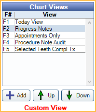

Show Chart Views
Use the Show Tab to set up different views for the grid in the lower right of the Chart Module (often called the Progress Notes) and define what information shows in each view.
In the Chart Module module, click the Show tab.

Some selections also affect what shows in the Graphical Tooth Chart.
Items that are checked show in the current view. Check or uncheck an item to change the view. Changing an item here does not permanently change view settings.
Procedures: Check a box to show a procedure status. Uncheck a box to hide a procedure status. This also affects what shows on the Graphical Tooth Chart.
- Treat Plan: Procedures with a TP status.
- Completed: Procedures with a C status.
- Existing: Procedures with a EO or EC status.
- Referred: Procedures with a R status.
- Conditions: Procedures with a Cn status.
Proc Notes: Shows Procedure Notes, Commlog text, body of emails, appointment notes, and task details of corresponding Procedures or Object Types.
Selected Teeth: Show only procedures and progress notes for teeth selected in the Graphical Tooth Chart. Also includes related quadrant and arch procedures and notes. Selecting this box deselects all Object Types (e.g., Appointments, Commlogs, etc).
All: Click to select all procedure status options, Object Types, and Proc Notes checkbox.
None: Click to deselect all procedure status options, Object Types, and Proc Notes checkbox.
Date Filter: Indicates the date range of items that are showing. Click [...] to change the date range. 
- Date options: Quickly select a date range from the list.
- All: All dates (i.e., no date filter)
- Today: Click to insert the current date into the Start Date and End Date.
- Yesterday: Click to insert yesterday's date into the Start Date and End Date.
- This Year: Click to insert January 1 of the current year into the Start Date and December 31 of the current year into the End Date.
- Last Year: Click to insert January 1 of the previous year into the Start Date and December 31 of the previous year into the End Date.
- Start Date: Starting date of the date range filter. Type a date here. Only items on or after this date will be displayed. Click Now to quickly insert today's date.
- End Date: Ending date of the date range filter. Type a date here. Only items on or before this date will be displayed. Click Now to quickly insert today's date.
- Click OK to save the date range filter.
- Click Cancel to close the window without saving the date range filter.
Search: Find progress note items that match search terms. This will search through all showing Object Types. Any item matching the search term will display.
Object Types: In addition to procedures, show other objects.
- Appointments: Check to show appointments for the patient.
- Commlog: Check to show commlogs for the patient.
- Family: Check to also show commlogs and tasks for family members.
- Super Family: Check to also show commlogs for super family members. Only shows if Super Family is enabled in Show Features.
- Tasks: Check to show tasks attached to the patient, any family members, or to an appointment. The full path to the task will show.
- Emails: Check to show emails sent to the patient. Will display the body of the email if Proc Notes option is checked.
- Lab Cases: Check to show lab cases.
- Rx: Check to show paper or electronic prescriptions.
- Sheets: Check to show filled patient forms.
Show Auto Commlogs: Show Commlog entries that have been automatically generated (i.e., not user-generated or created by user action). Includes Commlogs created by WebSched, Program Links, Appointment Reminders and Confirmations, Automated Thank-Yous, New Patient Thank-Yous, and FHIR. Checkbox is user specific, and affects automated Commlogs in the Account Module, Chart Module, and Appointment Edit window.
Audit: Switch to Audit mode to include deleted procedures (status of D) and deleted sheets in the view. Procedures can't be edited in Audit mode. Deleted sheets can be restored by double clicking to open the Fill Sheet window, then clicking Restore.
Is TP View: Adds a Treatment Plan check box to the Enter Treatment tab. The Treatment Plan check box allows users to view and create treatment plans from the Chart module. See Treatment Plan in Chart. Checked by default when users create a new view. It is also checked in existing views if a user updates and no existing views have the box checked.
Chart Views: A list of all chart views currently set up. When a user highlights a Chart View, the grid switches and the view's default options show on the left. These values can be changed without affecting the default view settings. If a user changes an option, Custom View will show under the Chart Views list.
Open Dental comes with a Default View set up. We recommend the office renames it Progress Notes or create a new view called Progress Notes. Users can also create other views that show or hide specific information. The view listed first is the default view every time a user starts Open Dental. Switch between views using the function keys (F1-F12) on the keyboard or by clicking on a row. Use the Up/Down arrows to reorder views.
Chart View Edit
Double-click a chart view to edit or click Add to create a new view. 
Description: Enter the name of the view. This will also show as the grid title.
Dates Showing: Select the date range of items that will show. Select All to prevent the view from being filtered by a date range.
Enable Procedures, Object Types, and additional options to determine what appears in the Chart View. Descriptions for Procedures and Object Types are the same as noted at the top of this page.
- Procedures: Check the procedure statuses to include in the view. Descriptions are the same as noted above
- Object Types: Check the Object Types to include in the view.
- Click All to quickly select Procedures, Proc Notes, and Object Types. Click None to quickly clear all selections.
- Proc Notes: Shows Procedure Notes, Group Note details, Commlog text, body of emails, appointment notes, and task details of corresponding Procedures or Object Types.
- Selected Teeth: Check to limit the view to only teeth selected from the Graphical Tooth Chart.
- Audit: Check to enable Audit Mode in this view.
- Is TP View: Check to enable TP View.
Set to Default: Set all items in the Fields Showing list back to system defaults. Some items may be moved to/from Available Fields.
Fields Showing: Lists the columns currently in the view, in the order each column will show from left to right.
- Up / Down: Highlight an item in the list and use the arrow to reorder it in the list.
- Right arrow: Highlight an item and click the arrow to remove it from Fields Showing. It is added to Available Fields and no longer appears in the Progress Notes area for the Chart View.
- Double-click a Field Showing to edit field details. See Field Showing section below.
Available Fields: Lists all columns currently hidden from the current Chart View. Select an item and click the Left arrow to move it to Fields showing. It will now appear in the current Chart View's Progress Notes area.
Fields Showing
Double-click a Field Showing to edit.

- Internal Name: Default name of the field. This is read only.
- New Description: Enter text here to override the Internal Name. This will be the column header in Progress Notes.
- Minimum Width: Indicates the column minimum width needed to accomodate the New Description, or Internal Name if no New Description.
- Column Width: Enter any number equal to or greater than the Minimum Width.
Click OK on the Chart View Edit window to save the view.
Some Field Names are not self explanatory. Below are brief descriptions.
- Date: In most cases, the date the item was created. Appointments show the date the appointment takes place.
- Time: Varies by object. Emails show exact time it was created. Appointments show the scheduled time. This option will not show procedure times.
- Th: Tooth Number.
- Surf: Tooth Surface.
- Dx: Diagnosis.
- Description: Description of the appointment, procedure, etc.
- Stat: Procedure status.
- Prov: The attached provider.
- Amount: The procedure's billable fee.
- Proc Code: The procedure code.
- User: The user logged on to Open Dental when the item was entered. If a procedure, lists the user who last created or edited the procedure's notes. If an email, lists the user logged-on when the email was sent.
- Signed: Indicates whether or not an item (e.g. consent form, procedure) has been electronically or digitally signed.
- Priority: The procedure's priority level.
- Date TP: Day the procedure was added to the treatment plan.
- Date Entry: Day the procedure was entered.
- Prognosis: The procedure's prognosis.
- Length: Appointment length.
- Abbr: Procedure code abbreviation.
- Locked: Indicates if a procedure has been locked using Procedure Lock.
- HL7 Sent: Indicates if a procedure has been sent via HL7.
- Attachment: Indicates if a Task includes attachments.
- ClinicDesc: The procedure's clinic description set in Lists, Clinics.
- Clinic: The procedure's clinic abbreviation set in Lists, Clinics.
Logic of Row Order in Progress Notes
The Progress notes is a grid with many different kinds of objects in it. The following logic is used:
- All rows sorted by date (but not time).
- Within each date, rows sorted by type (commlogs and sheets are treated as the same type and will be intermingled).
- Within procedures of same date, sort by status, then priority, then tooth number, and finally procedure code.
- Other object types that are not procedures (like commlogs, sheets, etc), which have the same date, are further sorted by time.